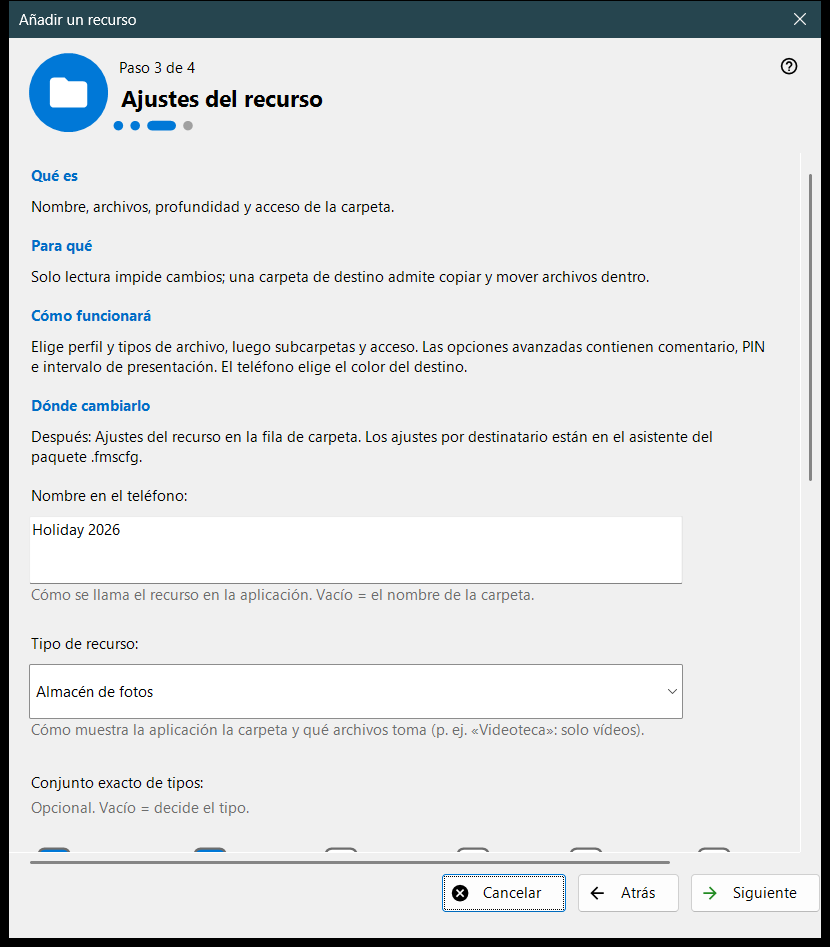
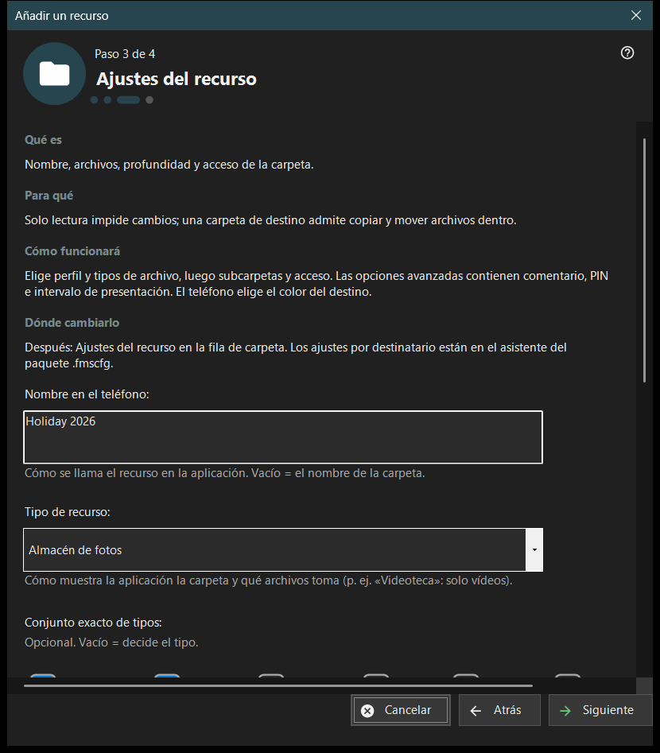

Añadir un recurso
Para qué sirve
Un asistente breve que añade un recurso compartido: una carpeta o un disco FileDO ya abierto. Se abre desde el elemento «Asistente para agregar recursos..» del menú Agregar.. y desde el flujo del primer inicio, y termina añadiendo el recurso a la lista compartida.


En este orden
- Lee qué es un recurso y pulsa «Siguiente».
- Pulsa «Elegir una carpeta..» y elige la carpeta.
- Fija el nombre, el tipo y el acceso en la página «Ajustes del recurso».
- Revisa el resumen y pulsa «Finalizar».
- Usa los botones de la última página para mostrar el código QR o abrir los ajustes.
Los elementos
Qué es un recurso
Un recurso es una carpeta o un disco virtual FileDO abierto al que el visor accede a través de este PC. Los archivos se quedan en el equipo; el teléfono los explora y los copia por la conexión, y la carpeta marcada en la lista es la que se sirve.
Elegir una carpeta
«Elegir una carpeta..» abre el selector de carpetas habitual y «Discos FileDO..» muestra los discos abiertos. Una carpeta que ya está en la lista se rechaza con «Esa carpeta ya está en la lista.» Elige discos FileDO que ya estén abiertos; el asistente no los crea ni los monta.
Ajustes del recurso
El nombre en el teléfono, el tipo, el conjunto exacto de medios, las condiciones de exploración y el acceso. «Solo lectura» prohíbe los cambios; una carpeta de destino permite copiar y mover archivos a ella. «Opciones avanzadas» contienen el comentario, el PIN y el intervalo de la presentación. El color del destino lo elige el teléfono.
Recurso y siguientes acciones
«Finalizar» guarda los ajustes y añade el recurso; hasta entonces cancelar no cambia nada. La última página indica si el recurso se sirve. Si el servidor está apagado, el teléfono aún no lo ve; si no se confirma el servicio, revisa los ajustes. «Mostrar el código QR» abre el código de acceso, «Ajustes..» los ajustes del gestor y «Cerrar» sale del asistente.
Ajustes del gestor · Ajustes de uso compartido SFTP · Ajustes del servidor de intercambio